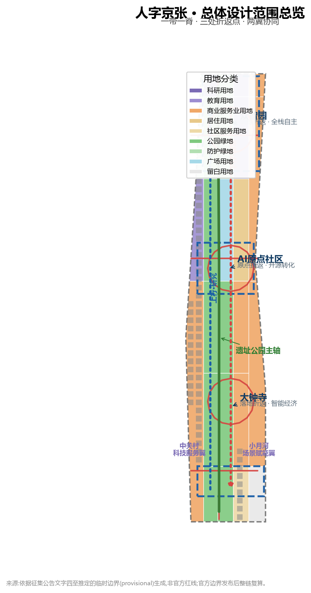
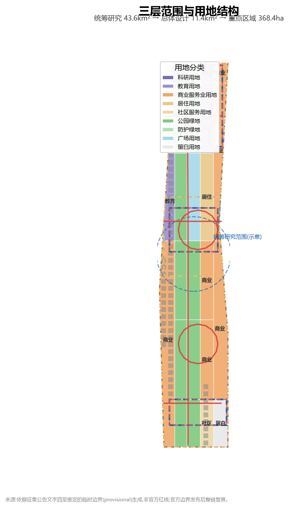
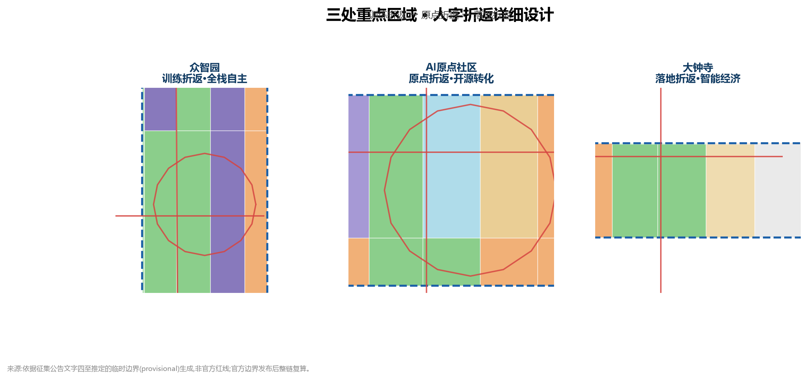
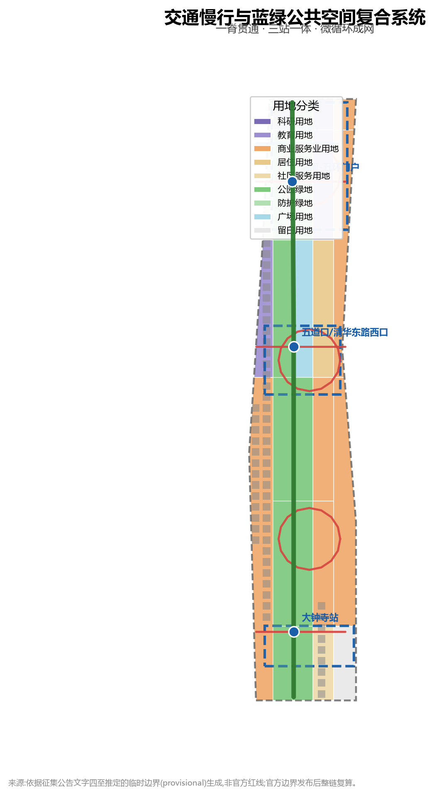
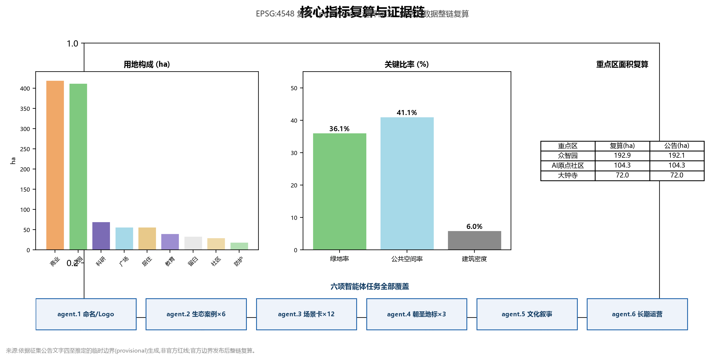

人字京张 JINGZHANG HERRINGBONE——百年折返·创新翻山:AI创新带城市设计方案
以京张铁路八达岭'人'字形折返线路的百年工程智慧为原型,把AI创新带组织为'上行基础研究—折返转化—下行场景落地'的双向折返系统;一带一脊、三处折返点、两翼协同,形成可验证、可回退、可运营的世界级AI创新带。
人字京张 JINGZHANG HERRINGBONE——百年折返·创新翻山:AI创新带城市设计方案
设计依据与资料清单
本方案以北京市规划和自然资源委员会海淀分局发布的《百年京张AI创新带城市设计国际方案征集资格预审公告》为第一依据 来源。公告明确三层范围(统筹研究约43.6平方公里、总体设计约11.4平方公里、重点区域合计约368.4公顷)、三大定位(百年京张文化带、都市AI生活体验带、AI融合创新带)和"控规城市设计深度+规划综合实施方案深度"的成果要求 标准。
第二依据是面向智能体的共创任务书 来源,其十大共创原则、五大功能、三区两翼和六项智能体任务(agent.1–agent.6)构成本方案的任务骨架 标准。所有 agent 空间建议均为概念建议、参考方案或可供专业团队深化的研究材料,不替代正式规划,不构成政府审定结论 来源。
第三依据是政府年度工作安排与公开报道反映的发展目标与现状基础,构成方案空间判断的现实起点:
- 海淀区政府2026年国民经济和社会发展计划报告(2026-02-06)明确提出"构建高效协同的南北AI双核生态区,打造京张遗址公园创新交往带",要求"谋划'人工智能+'标杆空间,优先落地一批可感可及、示范引领的创新场景",并部署"支持智源打造统一开源系统软件栈众智平台""推动人力资源服务产业园深度参与海淀AI原点社区建设" 来源。这三点分别是本方案"创新交往带空间""可感知场景""开源与原点社区"三条设计主线的政策锚点。
- 京张铁路遗址公园二期已于2026年8月6日建成开放:串联西直门至北五环总长9公里的文化带状绿廊,用地约53公顷,直接服务沿线70个社区、45万居民;已建成"三道一绿"无缝慢行系统、南段复原铁轨与焊轨厂工业遗迹、北段"京张之环"主题广场,并预留青年科创市集活动场地 来源。公园现状是本方案公共空间设计的现实基底,本方案不重复已建成内容,而是补足其"创新交往"功能缺口。
- AI原点社区已实际运营:2026年1月入选北京市首批人工智能创新街区,2025年跻身"全球十大创新区",以原点大厦为圆心辐射约3平方公里,汇聚30余所高校及科研机构、230余家AI企业、10万AI相关专业学子,已建成原点大厦、"胜算之门"艺术装置、星光大道机器人消费场景,并举办"原点party nights"等品牌活动 来源。本方案的三处折返点设计以这些已建成事实为起点,做"补链、串联、升维"而非另起炉灶。
- 开源是国家级战略方向:2026中关村论坛年会"人工智能主题日"AI开源前沿论坛上,北京智源发布众智FlagOS 2.0智算基座(面向智能体时代的开源系统软件栈),国家层面专项部署人工智能开源项目 来源。开源成果的公共展示与开发者荣誉空间,是本方案朝圣地标体系的重要依据。
第四依据是仓库维护者登记的机器可读资料包:brief/site-package/ 中的设计简报、允许设计空间、枚举、指标范围与 Schema,以及 data/source_registry.json 的来源可用性注册 来源 来源。data/processed/agent_fact_pack.md 仅作阅读导航 来源。
本方案空间计算使用仓库提供的临时粗略边界(brief/site-package/geometry/provisional_boundaries.geojson),所有图层标注 provisional_constraint、official_boundary=false 空间数据 空间数据。该边界依据公告文字四至与约面积推定,不表达道路红线、地块边界或权属边界;官方 polygon 发布后,本包全部图层与指标须整链重算,此数据缺口不阻断内容评分 来源。
设计原因说明:本方案每个设计决策(某位置/区域/细节为什么这么设计)的完整推理链——政策依据→现实问题→设计对策→空间落点——集中记录于文末"设计决策说明"章节;proposal.md 正文各章写设计结论与空间落点,推理过程可在该章节追溯。

三层范围工作框架
方案按公告确定的三层范围组织工作,每一层对应明确的设计问题、成果深度和数据落点 深度:
| 层级 | 设计问题 | 方案回答 | 数据落点 |
|---|---|---|---|
| 统筹研究范围(43.6km²) | AI产业生态与未来城市形态 | "人字折返"创新链:高校策源—开源协作—企业转化—公共体验—国际传播 | compliance_matrix、standard_matrix |
| 总体设计范围(11.4km²) | 产业空间、城市更新、交通市政与风貌 | 一带一脊、三折返点、两翼协同的用地与公共空间结构 | 空间数据、空间数据 |
| 重点区域范围(368.4ha) | 三处片区精细化设计 | 众智园/原点社区/大钟寺分别作为训练折返、原点折返、落地折返的详细方案 | 空间数据、空间数据、空间数据 |
总体空间结构:"一带一脊、三处折返点、两翼协同、多点场景"。 一带即京张遗址公园活力带(南北主轴,即"人"字的轨道);一脊即公园慢行主脊;三处折返点即三处重点区域;两翼即中关村科技服务翼(西)与小月河场景赋能翼(东),构成"人"字两撇;多点场景即沿带分布的 AI 场景驿站 深度。
本方案的核心隐喻来自京张铁路八达岭段的"人"字形折返线路:1909 年詹天佑以折返爬坡方式征服 33‰ 陡坡,用两台机车一推一拉完成翻越,是中国人自主修建第一条铁路的标志性工程创举。百年之后,海淀 AI 创新带以同一智慧组织创新:创新不是直线,而是折返——"上行列车"(基础研究与原始创新)从众智园出发,在 AI 原点社区完成转化(折返),再以"下行列车"(场景应用与产业落地)抵达大钟寺;每次折返都是一次价值跃迁,"人"字同时是"以人为本"的"人" 来源 深度。
这一隐喻与政府目标存在三重呼应:其一,京张铁路"自主修建"与AI"自主创新"共享同一精神基因,呼应海淀"南北AI双核生态区"的自主自强叙事 来源;其二,"折返=转化"的空间逻辑把"创新链"转译为"可步行、可感知"的城市动线,呼应"打造京张遗址公园创新交往带"的目标 来源;其三,公园二期已建成的9公里绿廊为"人字主轴"提供了现成载体,本方案在其上"补链"而非"重建" 来源。

统筹研究范围产业与未来城市研究
问题诊断:政府目标与现状差距
统筹研究范围回答"海淀 AI 产业向何处去、创新带承担什么角色"。政策分析显示,政府的期望是三条线的合流 来源:产业线(南北AI双核生态区)、空间线(京张遗址公园创新交往带)、场景线(可感可及、示范引领的创新场景)。对照现状,存在四个现实差距:
一是公园空间与AI叙事的落差:9公里绿廊已建成,但以历史科普、生态休闲、通勤健身为主,缺少承载"创新交往"的空间语言——开发者、创业者、研究者停留、讨论、展示的"第三空间" 来源;二是三区两翼创新链缺少空间链条感:AI原点社区内部高度活跃,但众智园、大钟寺与原点社区之间的创新联系停留在产业逻辑,公共空间层面缺乏南北贯通的"链条" 来源;三是开源成果缺少公共展示与荣誉空间:众智FlagOS等国家级开源成果诞生在海淀,但公众无处可看、开发者无荣誉可记 来源;四是文化叙事未整合:京张铁路、中关村、AI三线文化尚未形成统一叙事与国际表达。
设计对策:三大定位与五大功能的空间化
针对上述差距,方案把三大定位落实为可操作的空间与运营机制 来源:
- 百年京张文化带:以遗址公园为历史主轴,把"人"字形折返的工程智慧转化为城市叙事与公共艺术系统,补足公园的"文化叙事层" 深度 来源。
- 都市AI生活体验带:以五道口、清河、大钟寺等轨道节点为骨架,把AI+交通、AI+公共服务、AI+消费组织为可步行、可感知的日常体验,落实"可感可及"要求 深度 来源。
- AI融合创新带:以"上行—折返—下行"的创新回路组织全栈自主创新、开源生态与智能经济,呼应"南北AI双核生态区" 来源。
五大功能分别锚定在空间上:AI全栈自主创新体系(众智园)、世界级AI创新生态(AI原点社区)、AI+场景赋能新范式(小月河场景赋能翼)、智能化AI活力城市(公共空间与慢行系统)、AI治理全球话语权(众智园标准与安全治理+大钟寺数据要素流通) 来源。
总体概念、命名体系与视觉规范(agent.1)
主名称:"人字京张 JINGZHANG HERRINGBONE"。命名体系分三层:
1. 一带主名:人字京张(JINGZHANG HERRINGBONE)——"人"字形折返线路的百年记忆+创新带的空间隐喻,双关"以人为本";与政府"京张遗址公园创新交往带"提法直接对应 来源。 2. 三处折返点名:"训练折返·众智园""原点折返·AI原点社区""落地折返·大钟寺",与"上行—折返—下行"回路一一对应;其中"原点折返"与AI原点社区已运营的"原点"IP(原点大厦)自然衔接 来源。 3. 节点与活动名:"折返驿站"(AI场景节点)、"上行列车/下行列车"(产业与人才双向流动机制)、"翻山时刻"(年度创新节)。
Logo方向:以"人"字折返轨道为基本形——两条方向相反的箭头在一处折返点交汇,构成开放的"人"字形回路;一撇代表研究上行,一捺代表场景下行,交汇点即转化节点。Logo 仅为方向性概念,字体、图形与标准色待专业设计与清权后确定 深度 来源。
视觉规范(方向性建议):为支撑"全球辨识度"目标 来源,建议建立三层VI系统:(1)标准色——铁路铁锈红(#8C3B2E,遗产色)与AI电光蓝(#1B5FA8,未来色)为主色,清河绿(#2E7D32)与原点金(#C79838)为辅助色;(2)标准字体——中文采用思源黑体/微软雅黑加粗用于标题、正文用常规字重,英文采用无衬线体(Inter/Roboto),数字与代码标注采用等宽字体,保证国际传播的通用性;(3)辅助图形——以"人"字折返轨迹为单元生成连续纹样,用于导视、铺装、栏杆与活动视觉,形成从Logo到空间界面的统一识别。以上均为概念建议,标准色值、字库授权与应用规范待专业设计与清权后确定。
全球AI创新生态案例与海淀生态方案(agent.2)
方案对标 6 个全球 AI 创新生态案例,提炼可转化为空间、运营与场景机制的六条经验 深度:
| 案例 | 核心机制 | 对京张的转化 |
|---|---|---|
| 美国硅谷(斯坦福—101公路走廊) | 大学策源+风险资本+企业集群的线性走廊 | 高校策源沿遗址公园主轴布置,资本服务置入中关村科技服务翼 |
| 美国波士顿肯德尔广场 | 近校街区型创新社区,成果转化与生活混合 | 强化 AI原点社区"近校成果转化街",呼应其已运营的近校生态 来源 |
| 新加坡榜鹅数字园区 | 花园型产业园区,绿色空间承载创新交往 | 众智园"花园型AI街区",清河界面承载低碳交往 |
| 英国伦敦国王十字更新区 | 轨道交通驱动的大规模城市更新+科创集聚 | 大钟寺站四象限一体化与智能经济街区 |
| 中国深圳南山科技园 | 龙头企业牵引+硬件创新生态 | 大钟寺领军企业牵引智能体与终端产业 |
| 德国慕尼黑数字工业集群 | 产业标准、测试验证与治理结合 | 众智园标准制定与安全治理展示节点 |
这些案例的共同经验是:创新生态=策源(研究)+转化(中介)+落地(产业)+氛围(城市生活) 四要素闭环。针对"覆盖基础研究、产业孵化和资本服务的海淀创新生态方案"要求,方案把四要素组织为三环节空间化方案 深度:
- 基础研究环节(策源):依托清华、北大、中科院等高校与智源等新型研发机构,落位于AI原点社区的"近校成果转化街"与高校协同创新教育用地 空间数据;政府已部署"支持智源打造统一开源系统软件栈众智平台",本方案将开源发布厅作为其公共界面 来源。
- 产业孵化环节(转化):沿"原点社区—众智园"形成孵化走廊——原点社区承载早期孵化、成果发布与人才特区服务,众智园承载中试测试、标准治理与产业展示;用地层面由孵化用地与研发测试用地共同支撑 空间数据。
- 资本服务环节(资本):中关村科技服务翼置入科技金融服务驿站、融资路演、知识产权与国际技术交易功能,与政府"科技金融服务驿站""创融海淀"布局衔接 来源;大钟寺国际路演客厅承担资本与产业的对接界面。
三区两翼协同回路
"三区两翼"构成双向回路:研究上行(高校—AI原点—众智园测试)、要素供给(中关村科技服务翼提供资本、IP与全球配置服务)、场景下行(小月河场景赋能翼把技术导入生活)、反馈回传(场景数据与需求回到策源端)。该回路不是单向流水线,而是可回退、可迭代的折返系统——任何一个环节验证失败,项目与场景可暂停、回退或重试 来源 深度。与AI原点社区已运营的"十分钟创新圈"相比,本回路把创新要素的聚合尺度从"社区内部"扩展为"沿带九公里" 来源。
总体设计范围城市更新与控规深度城市设计
用地结构与产业空间
总体设计范围 11.4 平方公里,geometry/land_use.geojson 以 25 个无缝地块完整覆盖提交边界 空间数据 指标。核心用地判断:
- 公园绿地、蓝绿廊道与广场(1401+1402+1403,约488.8公顷,占42.8%):以京张遗址公园活力带为脊柱(约412.5公顷),向北衔接清河-众智园蓝绿走廊与五环绿楔,向南延伸至大钟寺站复合公园,五道口AI原点广场(约56.9公顷)作为折返点象征 空间数据 指标。绿地率设计目标体现"花园型AI创新带"定位,支撑人才向往的高品质城区。
- 商业服务业用地(05,约420.0公顷,占36.8%):集中在大钟寺智能经济街区、原点社区消费场景与众智园产业服务界面,承载智能体、智能终端、内容消费与数据要素流通 空间数据。
- 科研与教育用地(0802+0804,约110.9公顷):众智园AI全栈研发测试(约70.2公顷)与高校协同创新教育用地(约40.7公顷),构成"策源—转化"的上行段 空间数据 空间数据。
- 居住与社区服务(0701+0702,约87.6公顷):AI人才社区(约56.9公顷)紧邻原点社区,服务"工作-生活-社交-学习"一体化 空间数据。
建筑规模与拆改留逻辑
geometry/buildings.geojson 以 60 个示意建筑基底表达更新街区的空间供给形态(约68.3公顷,建筑密度约6.0%) 空间数据 指标 指标。拆改留按三类逻辑处理 深度:
- 保留:清华园火车站等历史遗存、遗址公园已实施段、现状高校与园区主体建筑;
- 改造:沿带低效厂房、批发市场与老旧商业界面,以"功能置换+形态更新"为主;
- 新建/留白:潜力更新地块与南部留白用地(约33.8公顷),作为弹性创新预留 空间数据。
容积率、建筑高度、建筑密度、退线与道路红线等法定控制指标在公开资料中不可得,metrics.json 中 floor_area_ratio 标注为 unknown,待官方控规条件确认后复算 指标 [assumption:A-CONTROLS-001]。
更新项目清单与实施政策
总体设计形成六类更新项目(JZ-01—JZ-06),覆盖慢行断点缝合、清河创新界面、近校成果转化街、大钟寺四象限连通、AI公共服务节点与全球AI活动路线 深度,详见"更新项目清单、实施政策与分期计划"章。实施政策建议:统筹更新主体、弹性容积奖励与公益空间挂钩、场景开放许可、数据要素合规流通框架与公共参与机制,均作为概念建议提出 深度。
重点区域详细设计
三处重点区域分别达到规划综合实施方案的城市设计深度,每个片区形成"定位+空间结构+建筑更新+交通慢行+公共空间+AI场景+实施风险"的完整小方案 深度,空间证据分别对应众智园、AI原点社区与大钟寺三个图层要素 空间数据。
众智园AI自主创新加速区(训练折返·约192.1公顷)
定位:花园型全栈自主创新街区,AI"上行列车"始发站。空间结构:以清河界面为北缘生态与展示界面,组织"研发测试核+标准治理台+产业展示廊"三角结构。建筑更新:以国家AI平台及周边潜力用地为核心,建议功能业态为全栈研发、标准工作坊、安全治理展示与低碳算力体验;形态以低多层花园式街区为主。交通慢行:结合五环区域一体化提出对外交通优化方向,内部组织慢行优先微循环 空间数据。公共空间:清河-众智园蓝绿走廊承载开放测试与创新交往 空间数据。AI场景:模型红队测试场、标准制定工作坊、安全治理展示、低碳算力体验。实施风险:清河蓝线与防洪条件、国家平台周边用地权属、五环对外交通方案均待官方数据确认。
北京AI原点社区(原点折返·约104.3公顷)
定位:近校型成果转化与人才社区,创新链"折返点"。空间结构:以五道口—清华东路西口轨道节点为门户,组织"成果转化街+开源发布厅+人才社区"三片区。建筑更新:提出低扰动、有机更新的拆改留方案——高校周边旧有商业与居住界面以功能置换为主,新增成果孵化与人才服务载体。交通慢行:围绕五道口、清华东路西口轨道站一体化设计,缝合校区、园区与街区慢行联系 空间数据。公共空间:五道口AI原点广场与开源会场(1403广场用地)作为折返点象征 空间数据。AI场景:开源发布厅、近校成果转化街、人才特区服务、AI教育体验。实施风险:校区边界、权属与首层业态受高校与街区现实条件约束,需逐一确认。
大钟寺AI产业聚集区(落地折返·约72.0公顷)
定位:城市型智能经济与国际交往街区,AI"下行列车"终点站。空间结构:以大钟寺站为锚点,组织"四象限步行连通+智能经济街区+数据要素服务台"。建筑更新:围绕领军企业周边潜力地块与高校更新改造方案,建议智能体、智能终端、内容消费等功能业态。交通慢行:开展大钟寺地铁站路口四象限步行连通设计,完善非机动车停放与静态交通组织 空间数据。公共空间:大钟寺站复合公园绿地复合利用,承担产业展示与国际交往 空间数据。AI场景:智能体与终端展示、内容消费体验、数据要素沙盒流通、国际路演。实施风险:轨道一体化方案、规划绿地复合利用条件与重点企业周边权属待确认。

AI 创新生态、人才画像与 AI+ 场景
问题诊断与对策:AI+场景如何进入具体街区
针对"设计AI+医疗、AI+教育、AI+商业等场景如何进入具体街区,构建可感知的未来生活场景"的要求,方案遵循两条原则:一是场景必须可感知——与政府"可感可及、示范引领"要求一致,场景落在真实街道界面而非抽象节点 来源;二是场景必须与已建成现实衔接——AI原点社区已有"星光大道"机器人消费场景,本方案在其基础上扩展而非重复 来源。据此提出三条示范街区:
| 示范街区 | 位置 | AI+领域 | 进入街区的方式 |
|---|---|---|---|
| 五道口智育街 | AI原点社区,沿五道口-清华东路西口站间街段 | AI+教育 | 沿街界面植入"AI课堂橱窗"(高校公开课/模型演示)、近校成果转化驿站、学生创新工坊首层,利用已运营的社区人流与高校资源 来源 |
| 大钟寺智商街 | 大钟寺站四象限 | AI+商业 | 依托站城一体化,首层组织智能体门店、终端体验店、内容消费空间,与规划绿地复合利用衔接,形成"出站即体验"的动线 |
| 清河智医界面 | 众智园临清河段 | AI+医疗 | 结合智慧养老与AI辅助诊疗方向,在社区服务用地植入AI健康小屋、远程诊疗驿站,与清河蓝绿界面形成"健康+绿色"复合场景 来源 |
三条示范街区均落到建筑基底与公共界面图层,作为"AI+场景如何进入具体街区"的可读示范 空间数据 深度。
五类用户画像(agent.3)
方案建立五类用户画像,每类对应空间响应与治理边界 深度:
| 用户画像 | 典型需求 | 空间响应 | 自检边界 |
|---|---|---|---|
| 开源开发者 | 发布、协作、测试、社区声誉 | 原点社区开源发布厅、公共代码墙、夜间协作空间 | 不采集个人行为轨迹,活动数据只做聚合统计 |
| 初创团队 | 低成本办公、算力入口、产品试验场 | 众智园共享测试场、端侧算力驿站、标准治理咨询 | 算力与数据服务需另行授权 |
| 头部企业访客 | 展示、商务、国际接待、人才招聘 | 大钟寺国际路演客厅、轨道站点接驳、重点企业周边公共空间 | 企业标识与案例须清权 |
| 周边居民 | 通勤、休闲、社区服务、低扰动更新 | 遗址公园慢行环、社区服务嵌入、夜间照明与活动分级 | 不将居民画像用于商业推荐 |
| 高校师生 | 成果转化、跨校协作、日常慢行 | 校区-园区慢行缝合、成果转化驿站、AI教育体验点 | 校园数据与科研成果需授权 |
十二张AI场景卡(agent.3,含3个产业测试验证场景)
场景卡覆盖产业场景与城市功能场景,每张卡说明空间载体、服务对象、数据来源、隐私边界、人工复核与运营主体 深度:
| 场景卡 | 空间载体 | 类型 | 设计说明 |
|---|---|---|---|
| 01 模型红队测试场 | 众智园 | 产业测试验证 | 面向全栈模型的对抗性测试与安全评测,可参观、可预约、可监管;测试结果人工复核后发布 |
| 02 数据要素沙盒流通间 | 大钟寺 | 产业测试验证 | 以合规、授权、可审计为前提的数据要素与数字资产流通试验;不处理个人隐私数据 |
| 03 端侧算力驿站 | 总体设计范围节点 | 产业测试验证 | 端侧算力与分布式能源结合的新基建原型,小规模试点,验证后分级推广 |
| 04 开源发布厅 | AI原点社区 | 产业场景 | 成果发布、代码贡献展示与小型路演,服务开发者社区;与智源开源生态衔接 来源 |
| 05 近校成果转化街 | AI原点社区 | 产业场景 | 孵化、展示、法务、知识产权与投融资服务一条街 |
| 06 大钟寺国际路演客厅 | 大钟寺 | 产业场景 | 智能体、终端与内容消费企业的展示洽谈与媒体发布 |
| 07 AI慢行导航与断点识别 | 遗址公园脊 | 城市功能场景 | 可解释导视与低侵入传感识别慢行断点、拥挤与无障碍需求;数据最小化 |
| 08 清河低碳创新廊 | 众智园临河界面 | 城市功能场景 | 绿色空间、雨洪、步行骑行与AI展示结合的公共客厅 |
| 09 AI生活服务样板街 | 社区与商业交汇处 | 城市功能场景 | 医疗、教育、法律、生活服务等AI+场景的小尺度街区落地 |
| 10 清华园站AI文化导览 | 遗址公园南段 | 城市功能场景 | 百年京张文化+中关村创新+AI新文化的可解释导览 |
| 11 公共安全AI复核演练场 | 公共空间节点 | 城市功能场景 | 活动安全、人流疏导的AI辅助演练,人工决策保留最终裁决 |
| 12 全球AI活动周路线 | 一带公共空间系统 | 运营场景 | 从遗址文化、开源社区、产业展示到国际路演的可步行体验路线 |
所有场景遵守数据最小化、公开来源、可解释与人工复核原则:城市智能体可辅助识别慢行断点、公共空间热力、设施维护与活动安全风险,但不能替代规划审批、不能输出未经授权的个人画像、不能声称获得官方实施承诺 标准 深度。
蓝绿空间、公共空间与城市风貌
现状分析与功能补链:公园公共空间的创新交往缺口
京张公园二期已建成9公里绿廊与"三道一绿"慢行系统 来源,本方案不重复建设,而是针对三个功能缺口做"补链":一是创新交往空间缺位——绿廊以生态休闲为主,缺少开发者、创业者停留交往的场所;二是开源成果无处展示——国家级开源成果没有面向公众的展示界面 来源;三是贡献者无荣誉空间——开发者贡献在城市尺度上没有记录载体。据此设计三个地标组件:
地标组件一:开发者散步道(沿遗址公园慢行脊)
设计逻辑:公园已建成步行慢跑骑行三道 来源,本组件在步行道沿线叠加"创新交往"功能,不新增道路。空间动作:在步行道两侧设置开放式讨论节点(林下坐席+白板/触屏讨论终端+可移动路演台),每约500米一个"折返驿站",与AI场景卡07(慢行导航)联动;节点选址优先在众智园、原点社区、大钟寺三处折返点与公园的交界处,使"散步即交往"。图层与指标:公共空间图层 空间数据 指标。实施风险:驿站设施需与公园管理机构协调,照明与无障碍按现行规范执行 标准。
地标组件二:开源成果展示廊(原点社区)
设计逻辑:开源是国家战略、智源FlagOS等成果诞生在海淀 来源,但公众无处可看;AI原点社区已具备人流与生态 来源,是展示廊的最优落点。空间动作:在原点社区近校成果转化街设置"开源成果展示廊"——以可更新的数字展墙+实物展柜呈现开源模型、数据集、代码贡献,内容经版权与安全审查后公开展示;与开源发布厅(场景卡04)共用空间,形成"发布—展示—交流"一体。图层与指标:建筑基底与公共空间图层 空间数据。实施风险:展示内容涉及企业知识产权,须建立授权与审核机制。
地标组件三:智能体贡献荣誉墙(五道口·人字折返观景台)
设计逻辑:开发者是AI创新的核心贡献者,但城市空间缺少对他们的荣誉记录;以"人"字形折返轨道为形体的观景台是折返点象征,荣誉墙与之结合形成"贡献即地标"。空间动作:在五道口人字折返观景台内设智能体贡献荣誉墙——以可更新的数字铭牌记录开源贡献者、模型作者、场景共建者(经本人同意与授权后展示),与开发者社区运营(agent.6)联动,形成"贡献-记录-荣誉"闭环 深度。图层与指标:公共空间图层 空间数据。实施风险:个人信息保护须严格遵循授权与最小化原则 标准。
三个AI朝圣地标(agent.4)
1. 清华园火车站·百年原点纪念标(AI原点社区南侧):京张铁路历史遗存+AI文化原点,设置"从汽笛到算力"时间轴装置,荣誉展示清华园站与海淀AI发展的双百年叙事 深度; 2. 五道口·人字折返观景台(AI原点社区):以"人"字形折返轨道为形体的公共构筑物,象征创新链的转化节点,内设开源贡献荣誉墙与开发者纪念铭牌 深度; 3. 大钟寺·AI世界之窗(大钟寺站复合公园):以数据流与模型推理为意象的公共艺术地标,承载国际路演与成果发布,面向全球传播 来源。
地标均为概念建议,不表达已批准建设;所有导视、标识、符号与公共艺术须完成版权清权后实施 深度。
公共空间组件库
为支撑"可感可及"要求 来源,建议建立公共空间组件库:讨论节点(林下坐席+白板)、展示单元(数字展墙+实物展柜)、荣誉单元(数字铭牌)、路演台(可移动)、导视单元(人字纹样)五类组件,可组合复用于三处折返点与驿站,保证全带视觉统一。
交通、轨道、市政与公共服务设施
交通方案围绕轨道站点一体化、道路微循环、慢行断点、对外交通、停车与非机动车组织展开 深度:
- 慢行主脊:京张遗址公园南北贯通慢行道为"人"字轨道,组织东西缝合口与跨环路节点 空间数据;与公园二期已建成的"三道一绿"系统衔接,做功能补链而非新建 来源。
- 轨道一体化:五道口、清华东路西口、大钟寺三处站点开展一体化设计,以轨道站点为折返点门户 空间数据 空间数据。
- 微循环:三处重点区各设街区微循环环路,衔接慢行与公交 空间数据 空间数据。
- 对外交通:结合五环区域一体化提出众智园对外交通优化方向。
市政与新型基础设施融合分布式能源、端侧算力、AI产业服务设施与人才生活服务设施 深度。道路红线、管线、消防与市政条件缺失部分列入 assumptions 待补,不写成审定条件 空间数据。

文化叙事与导览路线(agent.5)
完整叙事:"汽笛—电路—算力"三幕
针对"把百年铁路文化、中关村文化和AI新文化组织成完整叙事"的要求,方案构建三幕叙事 深度 来源:
- 第一幕·汽笛(1909-1949):京张铁路自主修建,詹天佑"人"字形折返,象征"自主、自强、敢为人先";空间载体为清华园火车站纪念标与遗址公园南段复原铁轨。
- 第二幕·电路(1978-2018):中关村"电子一条街"到科技园区,象征"创新、突围、要素集聚";空间载体为中关村科技服务翼与原点社区成果转化界面。
- 第三幕·算力(2019-):AI大模型、开源生态、智能经济,象征"开源、开放、全球协作";空间载体为开源成果展示廊、智能体贡献荣誉墙与AI世界之窗。
三幕共同回答"从自主修路到自主造智"的百年主题,"人字折返"是贯穿三幕的空间与精神主线 来源。
文化导览路线与空间节点
配置一条文化导览主线与沿线节点:起点清华园火车站·百年原点纪念标(第一幕)→ 五道口·人字折返观景台与开源成果展示廊(第二、三幕交汇)→ 大钟寺·AI世界之窗(第三幕终点),串联三处折返点与三幕叙事;沿线每500米设置文化标识节点,与开发者散步道驿站共用。导览内容多语言呈现(中/英),服务国际访客与研学团体 深度。导览路线与AI场景卡10(清华园站AI文化导览)、卡12(全球AI活动周路线)衔接,形成"步行导览-数字导览-活动导览"三层体系。
更新项目清单、实施政策与分期计划
更新项目清单
| 项目编号 | 项目名称 | 类型 | 主要依赖 | 证据引用 |
|---|---|---|---|---|
| JZ-01 | 京张遗址公园慢行断点缝合 | 公共空间/交通 | 道路红线、桥下空间、交通组织复核 | 空间数据 |
| JZ-02 | 众智园清河创新界面 | 蓝绿空间/产业展示 | 河道蓝线、生态与防洪条件 | 空间数据 |
| JZ-03 | 原点社区近校成果转化街 | 城市更新/产业服务 | 校区边界、权属、首层业态 | 空间数据 |
| JZ-04 | 大钟寺站四象限步行连通 | 轨道一体化/慢行 | 轨道站点、道路交叉口、市政管线 | 空间数据 |
| JZ-05 | AI公共服务与端侧算力节点 | 新基建/公共服务 | 能源、算力、安全与运营主体 | 空间数据 |
| JZ-06 | 全球AI活动周公共路线 | 运营/品牌 | 公共空间许可、活动安全、版权清权 | 空间数据 |
| JZ-07 | 开发者散步道折返驿站 | 公共空间/运营 | 公园管理协调、无障碍、照明规范 | 空间数据 |
| JZ-08 | 开源成果展示廊 | 公共空间/产业展示 | 知识产权授权、内容审核机制 | 空间数据 |
分期计划
geometry/phasing.geojson 表达三期推进 空间数据 空间数据 空间数据:
- 一期(近期试点):三处重点区与遗址公园主轴,约369.3公顷,以轻量设施、场景开放与运营活动先行 指标;优先落点开发者散步道驿站、开源成果展示廊与荣誉墙三个地标组件;
- 二期(中期更新):原点社区-五道口活力核心,缝合校区园区街区 指标;
- 三期(长期治理):两翼拓展与南部留白,作为弹性创新预留 指标。
全球AI活动体系与长期运营闭环(agent.6)
针对"把'朝圣地'从概念转化为年度活动和运营闭环"的要求,方案建立地标-活动-运营闭环映射 深度 深度:
| 地标/空间 | 年度活动 | 运营主体(建议) | 转化指标 |
|---|---|---|---|
| 众智园测试场 | 春季"翻山时刻·模型评测节" | 国家AI平台/园区运营方 | 测试场景开放数、参与开发者数 |
| 开源成果展示廊+发布厅 | 夏季"开源折返·开发者大会" | 智源等开源机构+社区运营方 | 开源项目发布数、贡献者增长 |
| 大钟寺路演客厅 | 秋季"落地折返·智能经济展" | 产业园区+会展运营方 | 路演项目数、融资对接数 |
| 全带公共空间 | 冬季"年审·场景复盘"+全球AI活动周 | 政府统筹+社区共建 | 场景使用频次、国际参与度 |
开发者社区运营:以开源发布厅与公共代码墙为空间载体,建立贡献者荣誉体系(与智能体贡献荣誉墙联动)、代码审查与回退机制、季度见面会。场景开放运营:建立"场景开放许可"机制,企业可在约定数据与安全边界内申请测试场景,测试结果人工复核后公开。公共体验与城市地标运营:全球AI活动周路线串联三处折返点与文化导览线,形成可步行、可传播的公共体验路线。国际传播与招引转化:以"人字京张"品牌与"汽笛-电路-算力"叙事面向全球传播,通过活动路演与场景开放实现人才、企业与开发者转化,转化路径与效果指标待运营数据持续校准。所有活动、招商、资金、政策与运营安排均为概念建议,不构成已确定的政府安排 来源。
用地、建筑规模与拆改留方案
用地方案依据 标准 采用 0802/0804/05/0701/0702/1401/1402/1403/16 等代码,形成完整、闭合、无缝的用地分区 空间数据。建筑基底表达保留、改造与新建的空间供给形态 空间数据 深度。建筑规模与强度指标与 metrics.json 保持一致:可复算的空间指标(面积、比例、数量)为 known,法定管控指标(容积率、高度、密度、绿地率、退线)为 unknown 待官方条件 指标 [assumption:A-CONTROLS-001]。
指标体系、面积复算与合规矩阵
指标体系分三类 深度:
1. 空间可复算指标(known):site_area_sqm(11,412,825.4)、key_detailed_design_area_sqm(3,692,893)、green_ratio(0.3614)、public_space_ratio(0.4113)、building_density(0.0599)、land_use_parcel_count(25)、key_area_count(3)、phase_count(3)等 指标 指标 指标。 2. 需官方控规支撑的管控指标(unknown):容积率、建筑高度、建筑密度、绿地率、退线、道路红线 指标 [assumption:A-CONTROLS-001]。 3. 需运营数据校准的绩效指标:AI创新指数、人才密度、活动参与度、场景使用频次——写入合规矩阵作为后续深化方向,不冒充审定规划条件。
绿地率36.1%与公共空间率41.1%支撑"花园型AI创新带"与人才向往的高品质城区定位;三处折返点面积与公告约面积(192.1/104.3/72.0公顷)经 EPSG:4548 复算相对偏差+0.02%~+0.43%,符合临时边界精度预期 指标 指标 指标。
compliance_matrix.json 逐条覆盖公告 1.3/1.4/1.5 与 agent.1–agent.6 全部必选任务;standard_matrix.json 覆盖全部强制专业标准;design_depth_matrix.json 全部 required 深度项置为 complete。三者与 metrics.json、sources.json、assumptions.json 共同构成机器审计层 来源。

风险、版权与合规说明
双语合同:本包声明 bilingual_contract_version: "1",主文件为中文 proposal.md,完整英文对照为 proposal.en.md;五张核心图、A3/A0 图纸与 HTML 阅读版均提供英文对应副本,术语优先采用 docs/terminology-glossary.md 推荐译法 深度。
资料与版权:所有空间结论基于公开或清权资料;政府计划报告、公园竣工报道、AI原点社区报道、中关村论坛开源发布等新增来源均已登记于 sources.json;临时边界、用地、建筑、道路等图层标注 provisional_constraint,不用于审批与精确面积结论;图片、图纸、图标、数据与代码资产来源与授权状态登记于 sources.json 与 report/copyright_statement.md。Logo方向、地标、荣誉墙铭牌与公共艺术均为概念建议,字体、图像、肖像、商标待专业设计与清权 来源。
合规边界:本方案不声称官方批准、审定控规、最终土地权属、最终建设规模或保证实施;所有 agent 空间建议均为概念建议,不替代正式规划,不越过政府审定与法定审批 来源。荣誉墙铭牌、展示廊内容涉及个人信息与企业知识产权,须严格遵循授权、最小化与审核原则 标准。missing_data_checklist.csv 所列官方边界、控规、道路、地块、建筑、市政、文保与公共服务缺口均登记于 assumptions.json 与本节,待正式数据补齐后整链复算 空间数据 [assumption:A-CONTROLS-001]。
设计决策说明(Design Rationale)
本节说明关键设计决策(位置、区域、细节)的依据链条,按发展基础→现状问题→设计对策→空间落点四步组织。正文各章写设计结论,本节给完整推理链 来源 来源 来源。
一、发展基础:政策锚点
| 锚点 | 政策要点 | 来源 |
|---|---|---|
| 创新交往带 | "打造京张遗址公园创新交往带" | 海淀区2026年政府计划 来源 |
| 可感可及场景 | "可感可及、示范引领的创新场景" | 同上 |
| 开源平台 | "支持智源打造统一开源系统软件栈众智平台" | 同上 |
| AI原点社区 | "推动人力资源服务产业园深度参与海淀AI原点社区建设" | 同上 |
| 公园二期建成 | 9公里绿廊、"三道一绿"慢行系统、青年科创市集预留 | 科技日报 来源 |
| 原点社区运营 | 全球十大创新区、230+AI企业、原点大厦、星光大道 | 北京日报 来源 |
| 开源战略 | 智源发布众智FlagOS 2.0开源系统软件栈 | 中关村论坛 来源 |
政府目标的三条主线:产业线(南北AI双核生态区)、空间线(京张遗址公园创新交往带)、场景线(可感可及、示范引领)。总体概念"人字京张 HERRINGBONE"以"人"字形折返线路为原型,把"创新=直线推进"转译为"创新=折返转化",使三条主线统一在同一条城市带上。
二、存在问题:四大现实差距
| 差距 | 现状基础 | 主要制约 | 影响 |
|---|---|---|---|
| D1 公园空间与AI叙事脱节 | 9公里绿廊已建成 来源 | 绿廊以历史科普、生态休闲为主,缺"第三空间" | "创新交往带"落不到具体空间 |
| D2 三区两翼缺空间链条 | 原点社区内部活跃 来源 | 三区联系停留在产业逻辑 | 三处折返点各自为战 |
| D3 开源无展示、贡献者无荣誉 | FlagOS等成果诞生在海淀 来源 | 公众无处可看、贡献者无记录载体 | 开源生态"看不见、记不住" |
| D4 三线文化叙事未整合 | 三种文化资源俱全 | 各自表达,无统一叙事 | 国际访客看不懂海淀"故事" |
三、六问设计逻辑与空间落点
Q1 概念/命名/Logo/视觉:政策要求"全球辨识度的命名与logo"来源;京张最具辨识度的符号是"人"字形折返线路 → 主名"人字京张 HERRINGBONE",三层命名体系,VI三要素(标准色铁锈红#8C3B2E+电光蓝#1B5FA8、思源黑体/Inter字体、人字折返纹样) → 落点:全带导视、铺装、活动视觉、地标构筑物。
Q2 生态方案三环节:全球6案例共同经验是"策源+转化+落地+氛围"四要素;海淀策源强、转化中、资本服务分散 → 三环节空间化:基础研究(原点社区近校成果转化街 空间数据)→ 产业孵化(原点-众智园孵化走廊 空间数据)→ 资本服务(中关村科技服务翼+大钟寺路演客厅)。
Q3 场景进街区:政策要求"可感可及"来源;原点社区"星光大道"已证明场景进街区可行 → 三条示范街区:五道口智育街(AI+教育)、大钟寺智商街(AI+商业)、清河智医界面(AI+医疗) → 落点:建筑基底图层 空间数据。
Q4 公园地标三组件:公园已建成"三道一绿"来源,缺创新交往、开源展示、贡献荣誉三类功能 → ①开发者散步道:不新增道路,步行道沿线每500米设折返驿站,选址在三处折返点与公园交界处(折返点=转化节点,"散步即交往");②开源成果展示廊:落原点社区成果转化街(已有人流生态,与发布厅形成"发布-展示-交流"一体);③智能体贡献荣誉墙:落五道口人字折返观景台("贡献即地标",与运营闭环联动) → 落点:公共空间图层 空间数据 + 建筑基底图层。
Q5 文化叙事与导览:三种文化各有空间载体 → 按时间线组织"汽笛—电路—算力"三幕,回答"从自主修路到自主造智";导览路线沿三处折返点:清华园站(第一幕)→五道口(二、三幕交汇)→大钟寺(第三幕终点),每500米设文化标识节点,多语言呈现。
Q6 活动体系与运营闭环:原点社区已办"原点party nights"证明运营可行 来源 → 地标-活动-运营闭环映射:众智园测试场→春季模型评测节;开源展示廊+发布厅→夏季开发者大会;大钟寺路演客厅→秋季智能经济展;全带公共空间→冬季年审+全球AI活动周。每个地标对应一个年度活动、一个运营主体(建议)、一组转化指标。
四、设计原因呈现方式
1. proposal.md 正文:每个关键设计判断旁使用 [source:...] 标记指向政策依据,正文写结论与空间落点; 2. 本节:完整保留"政策依据→现实问题→设计对策→空间落点"推理链,供专业团队与评审追溯; 3. sources.json:登记全部公开来源URL、日期与使用边界,保证可复核; 4. assumptions.json:登记provisional边界与待补控规,说明哪些结论待官方数据确认。
参考资料
- 北京市规划和自然资源委员会海淀分局:《百年京张AI创新带城市设计国际方案征集资格预审公告》(2026-05-09)来源
- 面向全球智能体开展百年京张AI创新带城市设计开源征集任务书摘录(agent.1–agent.6)来源
- 北京市海淀区人民政府办公室:《关于海淀区2025年国民经济和社会发展计划执行情况与2026年国民经济和社会发展计划的报告》(2026-02-06)来源
- 科技日报:《京张铁路遗址公园二期建成开放 9公里带状绿廊激活城市空间》(2026-08-06)来源
- 北京日报:《从蓝图到实景,北京AI原点社区向未来启新程》(2026-04-10)来源
- 中关村论坛:2026年会"人工智能主题日"AI开源前沿论坛(2026-03-27)来源
- 仓库 site-package:design_brief、agent_taskbook、allowed_design_space、enums、planning_limits、standards 来源
data/source_registry.json与data/processed/agent_fact_pack.md来源- 临时边界推定与公开来源核查记录(provisional_boundaries_basis.md)来源
- 完整机器索引见
sources.json、metrics.json、compliance_matrix.json、standard_matrix.json、design_depth_matrix.json